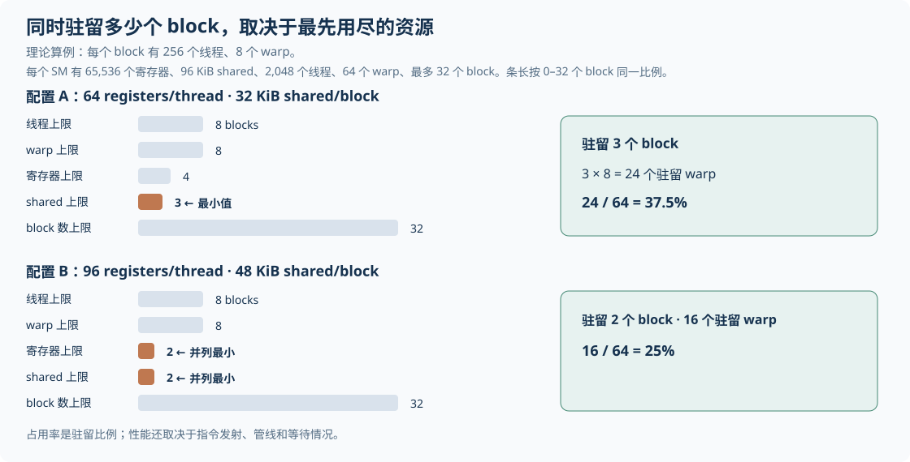
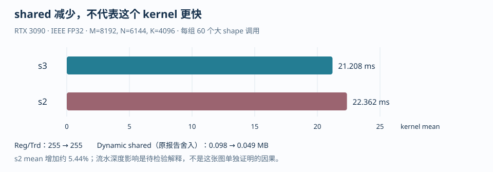

第五章 GPU kernel 的计时与性能分析#
优化前先核对结果和精度要求，再确定计时范围、基线与测试形状。随后估算计算量和数据流量，再结合寄存器、共享内存与分析工具解释实际表现；第 5 节回到 MatMul，按这些指标检查已有测量并设计后续对照，最后在同一组形状上检查回归。
1. 计时范围与 CUDA Event#
先用参考实现和误差阈值确认结果，再计时。浮点舍入和不同运算次序会带来数值差异，结果需满足题目或算子定义的精度要求。计时前检查地址、掩码、数据类型、非有限值和边界形状；正确性调用与计时样本分开，待比较实现使用同一组输入和精度设置。
再决定测 kernel，还是测包含主机调度、数据复制和同步的完整调用。fn 是每次执行一次待测算子的无参函数；预热用于让首次编译、模块加载等初始化离开稳态计时，重复次数用于收集样本。CUDA Event（CUDA 事件）记录设备时间线上的起止位置，因此不包含 Python 调用本身的全部主机耗时。
warmup = 10
repeats = 50
fn = lambda: kernel(x, y) # 一次待测算子调用；输入和输出已准备好
for _ in range(warmup):
fn()
torch.cuda.synchronize() # 等待预热工作结束
start = torch.cuda.Event(enable_timing=True)
end = torch.cuda.Event(enable_timing=True)
start.record()
for _ in range(repeats):
fn()
end.record()
end.synchronize()
elapsed_ms = start.elapsed_time(end) / repeats该方法测量同一 stream 中起止事件之间排入的 GPU 工作。若要测主机发起开销或整条服务请求，应另用主机时钟，并说明是否包含准备、排队与等待。计时前先用不规则形状检查正确性，正确性调用不计入性能样本。
同一批实验应使用相同输入、数值设置、预热次数、重复次数和等待范围。完成计时后，再结合编译器资源报告、Roofline 模型与性能分析工具判断瓶颈。
1.1 基线与测试形状#
基线应完成相同计算，并使用相同的输入输出精度、布局和误差要求。Copy 可与设备内复制对照；GEMM 可与相同精度设置的 torch.mm 或 cuBLAS 对照；Attention 则固定掩码、head 数和实际选择的后端。若两个接口包含的布局转换、输出分配或融合操作不同，应分别测量 kernel 和完整调用。
测试形状应覆盖不同的计算特点。GEMM 至少包含较大矩阵、小输出行数、长归约维度和无法整除分块尺寸的形状；归约至少覆盖短行、长行及不同行数；Attention 同时改变序列长度、批量大小和 Query/KV head 数。各形状先通过正确性检查，再进入性能表。同一配置可能在某些形状上更快，却在其他形状上变慢或占用过多片上资源。
1.2 重复测量与跨形状回归#
每轮测量重复调用 kernel，可降低计时粒度的影响；多轮独立测量用于观察波动。对同一形状，可在预热后交替测量基线 A 和候选 B，并保存每轮结果。温度、频率、其他进程、缓存和首次编译都可能影响比较，应记录运行条件，并把编译时间与稳态时间分开。
每种形状报告中位数和四分位范围，以展示典型耗时和波动。若收益与波动相近，应增加测量并检查环境。需要估计加速比置信区间时，应另用适合的统计方法。
设第 j 种形状的基线与候选中位数分别为 、，加速比如下：
跨形状汇总时，可列出各项加速比及其几何平均，并同时报告最差回归：
几何平均给每种形状相同权重。生产请求频率差异较大时，按真实负载重放并测量端到端时间；不同形状的毫秒数不宜直接平均成通用算子指标。
下面的函数只汇总传入的实测毫秒数，不产生性能样本：
import math
import statistics
def summarize_ms(samples):
values = [float(x) for x in samples]
if len(values) < 5 or any(not math.isfinite(x) or x <= 0 for x in values):
raise ValueError("at least five positive finite measurements required")
q1, _, q3 = statistics.quantiles(values, n=4, method="inclusive")
return {"median_ms": statistics.median(values), "q1_ms": q1, "q3_ms": q3}
def compare_shapes(baseline, candidate):
if not baseline or baseline.keys() != candidate.keys():
raise ValueError("both implementations must use the same nonempty shape set")
reports = {}
for shape in baseline:
a, b = summarize_ms(baseline[shape]), summarize_ms(candidate[shape])
reports[shape] = {"baseline": a, "candidate": b,
"speedup": a["median_ms"] / b["median_ms"]}
ratios = [row["speedup"] for row in reports.values()]
return reports, {"geomean_speedup": math.exp(statistics.mean(map(math.log, ratios))),
"worst_speedup": min(ratios)}| 形状 / 精度 / 布局 | 正确性 | 基线中位数 / 四分位范围 | 候选中位数 / 四分位范围 | 加速比 | 寄存器、共享内存与实际瓶颈 |
|---|---|---|---|---|---|
| 大矩阵或长行 | — | — | — | — | — |
| 小矩阵或短行 | — | — | — | — | — |
| 非整除边界 | — | — | — | — | — |
| 模型实际出现的形状 | — | — | — | — | — |
最终报告应保留失败配置和退化形状。优化应针对测得的瓶颈；若调整资源后目标负载没有改善，或收益不足以抵消额外复杂度，就保留更简单的实现。
2. Roofline：计算强度与数据流量#
算术强度（Arithmetic Intensity，AI）是运算量与数据流量的比值：
给定有效显存带宽 和计算峰值 ，简化 Roofline 上界为：
字节数要注明计算口径。算法最小流量假设每个输入和输出只从所分析的存储层读写一次；实际 kernel 可能因访问未合并、cache miss、重复读取、write-allocate、padding 或中间结果产生更多流量。结合 Nsight Compute 报告的 DRAM/L2 字节数与 requested/actual throughput，按观测流量重新计算算术强度。
2.1 Vector Add 数值算例#
对 C[i]=A[i]+B[i]，每个元素有 1 次加法，FP32 最小流量是读取两个 4-byte 值并写回一个 4-byte 值，共 12 bytes：
课堂算例取有效带宽参照值 GB/s。按最小流量假设计算，上界为：
70 GFLOP/s 是将 840 GB/s 课堂参照值乘以每字节的运算量所得。报告实验有效带宽时，注明读写字节数和计时范围，并结合 Nsight Compute 的 DRAM/L2 流量确定数据来自哪一级存储。若有效带宽为 700 GB/s，可检查访问合并、网格大小、计时范围和 cache 重用。
本章脚本从参数读取带宽参照值和计算峰值：
cd <AIINFFRA>/roadmap/curriculum/gpu/05-performance-analysis-and-optimization
python examples/roofline_cases.py --bandwidth-gbps 840 --peak-tflops 202.2 GEMM 数值算例#
对行主序矩阵 ，取仓库 MatMul 使用的 ：
如果 A、B、C 都按 FP32 存储，并采用每个矩阵只读/写一次的算法下界：
因此：
若存储类型为 FP16，三块矩阵的算法流量下界为 218,103,808 bytes，AI 增至 1,890.461538 FLOP/byte。该变化只反映存储字节数；累加精度、Tensor Core 指令路径和结果误差需分别核对。GEMM 的高 AI 来自分块复用：一个 A tile 被多个输出列复用，一个 B tile 被多个输出行复用。若 profiler 观测的字节数高于算法下界，应按实际流量重新计算 Roofline 点。
cd <AIINFFRA>/roadmap/curriculum/gpu/05-performance-analysis-and-optimization
python examples/roofline_cases.py --bandwidth-gbps 840 --peak-tflops 20Roofline 给出理想上界，尚未计入 launch、地址计算、同步、指令依赖、占用率、bank conflict、频率变化和 cache 层级的影响。实测性能低于上界时，结合计数器与时间线定位限制来源。
3. Occupancy 与资源驻留上限#
估出计算量和数据流量后，还要看一个 SM 能同时驻留多少个线程块和 warp。每个线程块都会占用线程名额、寄存器和一定的 shared memory；最先达到上限的资源决定驻留数量。一个 SM 上驻留 warp 数与硬件上限的比值称为 Occupancy（占用率）：
占用率表示能同时驻留多少 warp。每周期的指令发射情况另由 Issue utilization（指令发射利用率）描述，受可发射 warp 数、依赖链、内存延迟、barrier、执行管线和指令类型影响。例如，25% 占用率的 kernel 仍可能用满某条执行管线；100% 占用率时，warp 也可能都在等待 global memory。
设每个 block 有 个线程、 个 warp、每线程使用 个 32-bit 寄存器、每 block 使用 字节 shared memory。一个 SM 的上限分别记为 （线程数）、（warp 数）、（32-bit 寄存器数）、（shared memory 字节数）和 （驻留 block 数）。忽略资源分配粒度时，驻留 block 上限可估为：
其中 、、、 分别表示线程数、warp 数、寄存器和 shared memory 给出的上限。若 ，shared memory 不限制 block 数，该项取无穷大。
这里 以 32-bit 寄存器个数计， 以字节计。估算暂不计寄存器和 shared memory 的分配粒度、每线程或每 block 的额外限制、编译器临时值及架构规则，因此结果是上界。实际驻留数量应查 ptxas -v、编译器 metadata、CUDA Occupancy API 或 Nsight Compute。
3.1 Occupancy 资源上限手算#
图中比较两组课堂假设下各项资源给出的 block 上限，最终驻留数取最小值。

下面使用一组课堂假设：每个 SM 有 65,536 个 32-bit 寄存器、96 KiB shared memory、2,048 个线程、64 个 warp，最多驻留 32 个 block；每个 block 有 256 个线程，即 8 个 warp。比较 64 registers/thread + 32 KiB shared/block 和 96 registers/thread + 48 KiB shared/block 两种配置。
第一种配置逐约束计算：
所以 ，活跃 warp 数是 ，占用率是 。
第二种配置逐约束计算：
所以 ，驻留 warp 数是 ，占用率为 。寄存器和 shared memory 在这组假设中并列限制驻留数量；分别调整其中一项后，再计算新的最小值。
可运行的算术复核在 examples/occupancy_budget.py：
cd <AIINFFRA>/roadmap/curriculum/gpu/05-performance-analysis-and-optimization
python examples/occupancy_budget.py脚本按输入假设进行整数运算。编译器还会按架构规定的寄存器和 shared memory 粒度分配资源，因此 65536/(256*96)=2 是逻辑估算；实际驻留数应以编译报告或设备查询为准。寄存器用量从 64 增至 65 时，分配粒度可能使驻留数跨过一个台阶，故需同时记录 ptxas 或 Nsight 数据。
3.2 Occupancy 与 kernel 时间#
例如，一个 256-thread GEMM block 缩小累加器分块后，寄存器用量从每线程 96 个降到 64 个，手算占用率从 25% 升至 37.5%。若这同时减少 A/B 数据复用，增加 global memory 读取或边界指令，kernel 仍可能变慢。较大的分块即使受寄存器限制而每 SM 只能驻留两个 block，也可能因减少 global memory 流量而提高吞吐。
调整分块尺寸或 warp 数时，同时记录：
硬件机制：寄存器/ shared / warp 上限共同限制驻留
待比较参数：BLOCK_M、BLOCK_N、BLOCK_K、num_warps、num_stages
预期指标：registers/thread、shared/block、resident blocks、eligible warps、stall
结论依据：同一 shape、同一精度、同一 warmup/计时协议下的耗时与计数器因此，active warps / maximum warps 表示驻留容量。warp 是否可发射、执行管线是否繁忙，应查看调度器与执行管线计数器；这些值无法从占用率推算。
Triton 官方 fused-softmax 教程先读取编译后的寄存器和共享内存用量，再估算可并发的 program 数。分块尺寸与 warp 数是编译输入，资源用量则由编译器确定；每次调整后都应重新读取编译结果。kernel 未使用共享内存时，计算驻留上限可略过 shared memory 一项，最终再用目标设备工具核实。
4. 浮点精度与结果差异#
IEEE FP32 使用 binary32 输入与结果格式，计算时仍按浮点规则舍入。编译器可能把乘加融合为 FMA，树形归约也会改变求和次序，因此结果可能与未融合或按另一顺序计算的参考值有差异。TF32（TensorFloat-32）通常保留 FP32 存储与累加器，在 Tensor Core 矩阵乘输入路径使用较短的有效尾数；其指令路径和误差表现与 IEEE FP32 不同，应分开测量。
仓库 solutions/triton/matmul.py 的严格 FP32 对照同时设置：
torch.backends.cuda.matmul.allow_tf32 = False
tl.dot(tile_a, tile_b, input_precision="ieee")MatMul 的 IEEE FP32 记录应列出 shape=(8192,6144,4096)、输入输出数据类型、allow_tf32、Triton 配置和误差阈值。TF32 对照另报 max_abs_error、max_rel_error，并使用相同预热与重复测量流程。这样可以分别看清精度路径和分块调整的影响；PyTorch 默认配置应从运行设置读取。
比较 torch.mm 与 Triton 时，固定 allow_tf32，并把 FP16、BF16/Tensor Core 与 FP32 路径分开记录，避免将精度和指令路径变化混入耗时差异。
正确性检查与计时样本#
仓库 MatMul 脚本预热 10 次、同步设备，再在同一 stream 上用 CUDA Event 计时 50 次，并以总耗时除以重复次数。先对 (1,1,1)、整除形状、(65,33,67) 等非整除形状及目标性能形状检查正确性；误差和非有限值检查通过后，再运行计时循环。
主机用 time.perf_counter() 计时而未在设备工作前后同步时，测得的可能只是 launch 开销。正确性调用应在计时循环之外；各配置使用相同预热和重复次数，避免逐次全设备同步改变测量范围。测试集覆盖 (1,1,1)、整除尺寸、(65,33,67) 一类非整除尺寸和性能尺寸，并检查有限值与误差阈值。
在仓库根目录运行 MatMul：
python solutions/triton/matmul.py --config k256-128x32x256-w8-s3不同 stream 仍串行：区分依赖、资源和提交队列#
两条 stream 没有显式 event 依赖，也不保证并发执行。默认 NULL stream 的隐式同步、内存分配、未完成的输入传输，以及单个 kernel 占满的寄存器或 shared memory，都可能让另一条 stream 等待。先从时间线定位等待发生在主机提交、设备排队还是 kernel 内，再选择对应的调整方式。
软件 stream 映射到哪些底层工作队列，取决于运行时配置；多个 stream 可能共享提交资源，从而出现额外串行。CUDA_DEVICE_MAX_CONNECTIONS 调整可用连接配置，不决定 SM、warp 或并行 kernel 数量。时间线显示提交资源竞争时，再按当前工具链和驱动文档核对参数，重启实验进程并与未启用 profiler 的结果比较。
Stream priority 影响尚未开始的工作被选择的先后次序，不提高正在执行指令的吞吐。下面的配置先查询设备支持的优先级范围，再创建高优先级 non-blocking stream：
int least_priority = 0, greatest_priority = 0;
CUDA_CHECK(cudaDeviceGetStreamPriorityRange(&least_priority, &greatest_priority));
cudaStream_t latency_stream{};
CUDA_CHECK(cudaStreamCreateWithPriority(
&latency_stream, cudaStreamNonBlocking, greatest_priority));
// Submit the latency-sensitive work and its real data dependencies here.
CUDA_CHECK(cudaStreamSynchronize(latency_stream));
CUDA_CHECK(cudaStreamDestroy(latency_stream));数值越小，优先级越高。正在执行的低优先级 block 不会因此立即停止；资源空出后，调度器才可优先选择高优先级工作。长 kernel 的 block 若持续时间较长，降低平均耗时与改善短请求尾延迟可能需要不同调整。Green Context、stream priority 和 Graph 分别涉及资源选择、调度提示和提交开销，应按各自的测量指标分析。
5. MatMul 案例：从配置表到性能证据#
本节用已保存的 Triton MatMul 实现和服务器测量串起前面的分析。比较时同时核对形状、精度、配置、计时条件和设备。
solutions/triton/matmul.py 使用 A[M,N] @ B[N,K] = C[M,K] 的行主序布局。BLOCK_M 切输出行 M，BLOCK_K 切输出列 K，BLOCK_N 切归约维 N。阅读配置表时，对照源码指针公式和 grid=(cdiv(M,BLOCK_M), cdiv(K,BLOCK_K))，即可确认每个参数对应的维度。
第一批是固定 M=8192,N=6144,K=4096、IEEE FP32、tl.dot(input_precision="ieee") 且 PyTorch allow_tf32=False 的候选 sweep：
| 配置 | 结果 | 解释边界 |
|---|---|---|
64x32x64,w4,s3 |
24.924 ms / 16,542.7 GFLOPS | 本批候选基线 |
128x32x64,w4,s3 |
22.298 ms / 18,491.3 GFLOPS | 同一形状与精度下快于本批基线 |
128x32x128,w4,s3 |
28.354 ms / 14,541.8 GFLOPS | 本批中慢于前一配置；原因待 profiler 检查 |
128x64x128,w4,s3 |
编译失败；shared 需要 131,072 B，大于 101,376 B 上限 | 超出编译资源上限 |
128x32x256,w8,s3 |
22.033 ms / 18,713.5 GFLOPS | 本批候选中耗时最低 |
同一复盘后续另存的一次结果为 20.830 ms / 19,794.1 GFLOPS，相当于 torch.mm 的 80.3%。这批结果对应自己的基准形状、IEEE FP32 设置和脚本批次，须与前一批 22.033 ms 分开比较。
5.1 P0-lite：Nsight Systems 流水深度记录#
流水深度对比固定 128x32x256,w8，只改变 num_stages。从 Nsight Systems trace 排除正确性检查的 kernel 调用后，保留 60 次目标大形状调用：
| 配置 | Triton mean / median | Reg/Trd | Dynamic shared | 同次 CUTLASS mean |
|---|---|---|---|---|
s3 |
21.208 / 21.163 ms | 255 | 0.098 MB | 16.716 ms |
s2 |
22.362 / 22.317 ms | 255 | 0.049 MB | 16.682 ms |
这批形状、精度、配置和计时口径下，s2 比 s3 慢 5.44134%；动态 shared 减半，Reg/Trd 都为 255。AutoDL 当时没有可用的 NCU 硬件计数器，因此没有直接测得 achieved occupancy、stall reason 或 issue utilization。较浅流水可能减少 latency hiding，而 shared 减少没有改变寄存器用量；这两点是待检验的解释。Nsight Systems 记录了时间线和 launch metadata，不含上述 NCU 硬件计数器。
服务器重跑时，固定输入形状、IEEE FP32、预热与重复次数及进程状态，只改 num_stages。历史数据留在上表；新一批结果填写在下表：
| 配置 | GPU / CC | correctness | mean / median ms | GFLOP/s | registers/thread / shared |
|---|---|---|---|---|---|
k256-128x32x256-w8-s3 |
— | — | — | — | — |
k256-128x32x256-w8-s2 |
— | — | — | — | — |
5.2 逐行读原始 trace：先确认测的是什么#
从 Nsight Systems trace 中选出两条同名 kernel 记录，查看下列字段：
| 记录 | Duration（ns） | Grid | Block | Reg/Trd | DymSMem（MB） |
|---|---|---|---|---|---|
| 小形状调用 | 10,561 | 1×1×1 | 256×1×1 | 246 | 0.049 |
| 一次目标大形状调用 | 19,016,006 | 64×16×1 | 256×1×1 | 255 | 0.098 |
两行都显示为 matrix_multiplication_kernel，但对应不同输入规模。Duration 除以一百万后分别为 0.010561 ms 和 19.016006 ms；后者是单次观测。汇总前按形状筛选，排除小形状正确性检查，再另算 60 次目标调用的均值。
Grid 的 64×16 与源码相符：输出为 8192×4096，每块输出 128×256，因此行方向有 64 块、列方向有 16 块。Block 的 256 个线程对应 8 个 warp。Reg/Trd 是编译后的每线程寄存器用量；DymSMem 是该 kernel 的动态共享内存用量。
应当按以下顺序阅读这份报告：
- 用kernel名称、Grid和Block辨认目标调用，并核对源码配置及输入形状。
- 排除四次小规模正确性调用，再对60个目标样本计算均值、中位数和离散程度。
- 对照Reg/Trd、共享内存与前面手算的驻留约束，提出可以检验的解释。
- 需要解释stall或实际occupancy时，再使用硬件计数器；不从时间线字段推导不存在的测量值。
5.3 正确性检查与误差阈值#
对浮点输出，常用判据是：
绝对阈值控制参考值接近零时的误差；相对阈值随参考值大小缩放。只看最大相对误差，可能把非常小的参考值放大成吓人的比率；只看平均误差，又可能掩盖少数位置的明显错误。应同时记录最大绝对误差、超阈值元素数量和非有限值。
参考实现的计算精度也要注明。CPU double 归约、GPU FP32 树归约和允许 TF32 输入的矩阵乘采用不同舍入路径。高精度参考用于评价误差；性能基线应使用相同精度设置。出现误差时，依次检查地址、掩码、输入精度和归约顺序，再按数值合同判断误差。
工具分别回答不同问题：
| 工具 | 主要用途 | 结果范围 |
|---|---|---|
| memcheck | 检查非法或未对齐访问等内存错误 | 不检查数学结果 |
| initcheck | 检查未初始化的设备全局内存读取 | 不覆盖所有同步问题 |
| racecheck | 检查其支持范围内的共享内存访问冲突 | 不覆盖任意全局内存数据竞争 |
| synccheck | 检查同步原语使用错误 | 不衡量算子性能 |
先按本章 §7 在本章目录编译 reduction_tail，再从同一目录运行下面两个检查：
compute-sanitizer --tool initcheck --error-exitcode=1 ./reduction_tail
compute-sanitizer --tool synccheck --error-exitcode=1 ./reduction_tail检查工具会改变执行开销，因此其运行时间不用于优化比较。正确性输出与正常运行的基准数据分开保存。
5.4 在同一 MatMul 算例上复测#
本章沿用 LeetGPU Matrix Multiplication 题面和已归档代码。服务器入口在 solutions/triton/matmul.py。先检查不规则形状，再用固定的 M=8192,N=6144,K=4096、FP32、allow_tf32=False 比较配置；计时采用第 1 节的预热与 CUDA Event 流程。
| 配置 | GPU / CC | 正确性 / 最大误差 | kernel 平均耗时（ms） | GFLOP/s | NCU counters |
|---|---|---|---|---|---|
k256-128x32x256-w8-s3 |
— | — | — | — | — |
| 相同配置、另一次独立运行 | — | — | — | — | — |
新记录注明 GPU、计算能力、形状、数据类型、精度开关、配置、预热次数、重复次数和软件版本。已有 20.830 ms、s3/s2 与 sweep 数字各自保留原测量条件，不与新表合并。
6. 优化假设、改动、指标证据#

每次调整都记录假设、改动和对应指标：
| 假设 | 改动 | 当前证据或待查看指标 |
|---|---|---|
| 输出分块较小，数据复用不足 | BLOCK_M:64→128，固定 N/K,w/s |
24.924→22.298 ms；可继续查看 global load、eligible warps 和寄存器用量 |
| 增大 K 分块可增加 A/B 复用 | BLOCK_K:64→128 |
22.298→28.354 ms；变慢原因需结合资源、流量和 stall 计数器检查 |
| 增大归约维分块可减少 N 维循环 | BLOCK_N:32→64（本代码中 N 为归约维，K 为输出列维） |
编译失败：131,072 B > 101,376 B shared memory 上限 |
| 增大 K 分块并增加 warp 可隐藏依赖 | 128x32x256,w8,s3 |
22.033 ms；需对照同批寄存器、shared memory 和 Roofline 数据 |
| 减少 stage 可释放 shared memory、增加驻留量 | s3→s2 |
shared 0.098→0.049 MB，Reg/Trd 均为 255，平均时间 21.208→22.362 ms；原因待查 |
| 二维排布导致 L2 重读 | grouped program ordering | 检查 L2 hit、DRAM 字节数与实测耗时 |
| IEEE FP32 计算受限，可用 TF32 换取速度 | 单独测 TF32 配置 | 记录速度、最大绝对/相对误差和 MMA 指令 |
| 减少寄存器可提高驻留量 | 缩小累加器或分块 | 检查寄存器/线程、驻留 block、spill 与实测耗时 |
表中尚未测得的指标仍是待检验项。比较时固定形状、精度、预热次数、重复次数和设备，再根据对应计数器判断假设。
7. 从源码到 PTX、SASS 与 profiler#
从源码到机器指令有几层证据：源码展示算法和分块；ptxas -v 报告寄存器、local、shared 等编译资源；PTX 展示虚拟指令和 memory space；SASS 展示目标 GPU 的机器指令。Triton 会按配置即时编译；配置改变后需检查新产物，实际寄存器用量以编译结果为准。
cd <AIINFFRA>/roadmap/curriculum/gpu/05-performance-analysis-and-optimization
nvcc -std=c++17 -O3 -lineinfo -Xptxas=-v -arch=sm_XX \
../04-synchronization-and-asynchronous-execution/examples/reduction_tail.cu \
-o reduction_tail
cuobjdump --dump-ptx reduction_tail
cuobjdump --dump-sass reduction_tail把 sm_XX 替换成目标计算能力对应的编译目标，并按目标设备选择支持的架构。若需要更细的 SASS 反汇编，在生成 cubin 后使用：
cd <AIINFFRA>/roadmap/curriculum/gpu/05-performance-analysis-and-optimization
nvcc -std=c++17 -O3 -lineinfo -arch=sm_XX -cubin \
../04-synchronization-and-asynchronous-execution/examples/reduction_tail.cu \
-o reduction_tail.cubin
nvdisasm reduction_tail.cubin实际 profiling 命令：
cd <AIINFFRA>/roadmap/curriculum/gpu/05-performance-analysis-and-optimization
nsys profile --trace=cuda,nvtx,osrt --stats=true \
--output=matmul_k256_nsys \
python ../../../../solutions/triton/matmul.py \
--config k256-128x32x256-w8-s3
cd <AIINFFRA>/roadmap/curriculum/gpu/05-performance-analysis-and-optimization
ncu --set roofline --target-processes all \
--export=matmul_k256_ncu \
python ../../../../solutions/triton/matmul.py \
--config k256-128x32x256-w8-s3Nsight Systems 显示主机提交、stream、kernel、H2D/D2H 与空闲区间的时间顺序；Nsight Compute 分析单个 kernel 的占用率、寄存器与 shared 用量、DRAM/L2 流量、warp stall、Roofline 和 MMA/FP32 管线。诊断时同时记录源码改动、相关计数器变化和未开启 profiler 时的 kernel 耗时。
nvidia-smi 显示当前设备、驱动和运行状态，其中的 CUDA 版本是驱动支持的最高版本。nvcc --version 显示已安装的 Toolkit 编译器版本；-arch=sm_XX 指定编译目标。分别记录设备与编译目标；编译成功确认目标文件已生成。
GPU MODE 第一讲从完整 PyTorch 调用入手，用性能工具确认实际执行的 kernel。下面的独立实验预先分配输入，比较三种逐元素平方写法；先检查结果并预热，再用 CUDA Event 计时，最后采集 CPU/CUDA 时间线。计时循环与 profiler 分开运行。
import torch
from torch.profiler import ProfilerActivity, profile, record_function
x = torch.randn(1 << 20, device="cuda", dtype=torch.float32)
operations = {
"torch.square": lambda: torch.square(x),
"x * x": lambda: x * x,
"x ** 2": lambda: x ** 2,
}
reference = x * x
for fn in operations.values():
torch.testing.assert_close(fn(), reference)
for name, fn in operations.items():
for _ in range(5):
fn()
torch.cuda.synchronize()
start = torch.cuda.Event(enable_timing=True)
end = torch.cuda.Event(enable_timing=True)
start.record()
for _ in range(100):
fn()
end.record()
end.synchronize()
print(f"{name}: {start.elapsed_time(end) / 100:.6f} ms")
with profile(activities=[ProfilerActivity.CPU, ProfilerActivity.CUDA],
record_shapes=True) as prof:
for name, fn in operations.items():
with record_function(name):
for _ in range(10):
fn()
torch.cuda.synchronize()
print(prof.key_averages().table(sort_by="cuda_time_total", row_limit=20))
prof.export_chrome_trace("square-trace.json")这三种写法执行相同数学运算，实际 kernel 数量和实现以 trace 为准。汇总表显示框架算子的调用次数和累计时间；在 square-trace.json 中沿 record_function 标记查看 GPU 轨道，可记录 kernel 名称与次数。每种表达式采集 10 次，区分总调用数和单次调用的 kernel 数。CUDA Event 结果来自独立的计时循环。
| 表达式 | profiler 中的实际 kernel 名称 / 次数 | CUDA Event mean ms | GPU / CC |
|---|---|---|---|
torch.square(x) |
— | — | — |
x * x |
— | — | — |
x ** 2 |
— | — | — |
计时按 event record、等待完成、读取 elapsed time 的顺序执行。系统时间线用 Nsight Systems 分析，kernel 硬件指标用 Nsight Compute 分析。
CUDA Sanitizer 用于先排除内存错误和同步错误，再解释性能：
cd <AIINFFRA>/roadmap/curriculum/gpu/05-performance-analysis-and-optimization
nvcc -std=c++17 -O2 \
../04-synchronization-and-asynchronous-execution/examples/reduction_tail.cu \
-o reduction_tail
compute-sanitizer --tool memcheck --error-exitcode=1 ./reduction_tail
compute-sanitizer --tool racecheck --error-exitcode=1 ./reduction_tailCUDA_LAUNCH_BLOCKING=1 可把异步 launch 错误定位到更接近的调用点；该设置会改变时间线，所得耗时不用于性能比较。只读工具采集脚本为 examples/collect_cuda_tools.sh：
cd <AIINFFRA>/roadmap/curriculum/gpu/05-performance-analysis-and-optimization
bash examples/collect_cuda_tools.shkernel 时间与服务请求时延的测量范围不同。以下拓展说明如何把算子测量放回模型请求时间线，并介绍常见推理指标。
拓展：从 kernel 时间走到 LLM 请求时延
请求时延与 kernel 时间的边界#
请求时延与 kernel 时间使用不同的起止点。先根据请求时间戳计算指标，再看单算子优化怎样影响完整请求。
TTFT、TPOT 与端到端时延的边界#
设同一测量端观察到请求到达时间 a，以及 N 个输出 token 的时间 t_0,…,t_(N-1)。Time To First Token（TTFT，首 token 时延）和 Time Per Output Token（TPOT，首 token 之后的平均 token 间隔）为
在同一端、同一条请求、以最后一个 token 为结束点的定义下，
只有一个输出 token 时没有 token 间隔，因此 TPOT 不定义。若请求终点取整个 HTTP 响应完成时间，还包含最后一个 token 之后的协议或传输时间，应另行报告。
例如 a=0 ms，输出时间为 [120,160,220] ms。TTFT 为 120 ms，两次间隔为 40 与 60 ms，TPOT 为 50 ms，最后 token 的端到端时延为 220 ms。TTFT 包含请求路径上的排队、tokenization、cache 查询、传输、Prefill、首 token 选择和返回过程；单个 Prefill kernel 的 CUDA Event 时间只是其中一段。客户端与服务端时间戳需先校准时钟再相减。
下面是配套检查实际使用的实现：
def request_metrics(arrival_ms, token_times_ms):
times = list(token_times_ms)
if not times or not all(math.isfinite(x) for x in [arrival_ms, *times]):
raise ValueError("at least one token and finite timestamps required")
if times[0] < arrival_ms or any(a > b for a, b in zip(times, times[1:])):
raise ValueError("timestamps must be chronological")
ttft = times[0] - arrival_ms
e2e = times[-1] - arrival_ms
tpot = (times[-1] - times[0]) / (len(times) - 1) if len(times) > 1 else None
return ttft, tpot, e2e分位数应从逐请求总时间计算。例：一半请求 TTFT=100、后续 Decode=1，另一半 TTFT=1、Decode=100。每条请求总时间都是 101；两个分项的 P95 各为 100，相加会得到 200。先求每条请求的总时延，再计算 P95。
单算子快两倍，模型为什么只快一点#
在没有重叠、其他阶段不变的串行模型中，设某算子占原总时间比例 f，局部加速 s 倍。原总时间归一化为 1，新时间为
例如原来 100 ms 中有 20 ms 属于这个算子，算子从 20 ms 降到 10 ms，总时间是 90 ms，整体仅快 1.111 倍。把 kernel 提升比例直接写成模型吞吐提升，会忽略其余 80 ms。
并发执行时还要看关键路径。两条 stream 的 kernel 时间可能重叠；缩短非关键路径上的 kernel，端到端时间可能不变。融合也会改变 launch 间隙、存储竞争和同步位置，因此应重新测量时间线。请求时延按请求时间戳和关键路径计算；profiler 中各 kernel duration 可能彼此重叠。
MFU 与带宽利用率要服务于瓶颈判断#
Model FLOPs Utilization（MFU，模型浮点运算利用率）按模型有效运算量 、测量时间 和对应精度的设备总峰值 计算：
MoE 的理论工作量按实际参与的专家路径计算，并说明是否计入重算、padding 和索引计算。峰值计算能力应匹配运算精度与设备数，例如 IEEE FP32 kernel 使用 FP32 峰值，多卡运算使用参与设备的总峰值。模型有效计算的 MFU 与硬件指令利用率是不同指标。
Decode 中的小矩阵和 KV 扫描可能使 MFU 较低，而请求时延主要受带宽或 launch 时间影响。此时检查有效字节数、DRAM/L2 流量、kernel 数和空闲间隙，再结合时延目标选择 batch。Prefill 的瓶颈也随输入长度、batch、稀疏索引和 Attention 序列长度变化。
按 Nsight 流程落实这些判断：先用 Systems 找出排队、launch、拷贝和 kernel 的关键路径，再用 Compute 分析热点 kernel 的计算管线与存储事务，最后在关闭 profiler 的请求测试中核对 TTFT、TPOT 和吞吐。服务等级目标（SLO）下的有效并发需通过压测确定；显存预算用于估算容量。
从仓库根目录运行时间戳、P95 边界示例与 Amdahl 检查：
python roadmap/curriculum/gpu/05-performance-analysis-and-optimization/examples/cpu_metrics_case.py